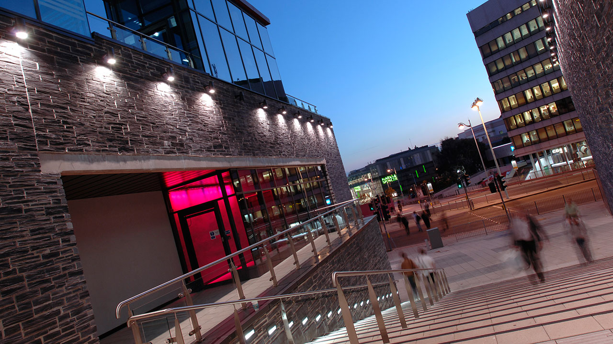
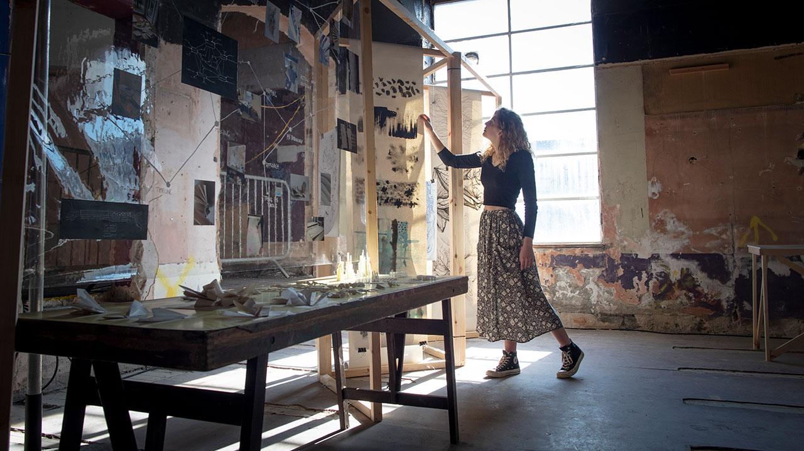

Undergraduate courses
BA (Hons) Accounting and Finance
3 years, Full time
Explore the latest developments in the field and master the complex set of skills needed to embark on a career in accounting and finance. You will have the opportunity to experience accountancy in the real world while working within businesses, and graduate with credits towards your professional accountancy qualification with the ACCA, ICAEW or CIMA.
BA (Hons) Fine Art
3 years, Full time
Realise your potential in one of Britain’s most vibrant cities for artist-led culture. Be guided by practising artists, curators, producers and writers to explore different concepts, contexts, techniques, and technologies. Your degree and our supportive studio culture will equip you to understand, and participate in the expanded forms of making, thinking and writing that reflect contemporary, interdisciplinary art practice.
Postgraduate taught programmes
MSc Finance
1 year, Full time
 Sharpen your analytical and critical reasoning skills, and hone your financial knowledge and technical proficiency with the MSc in Finance. This course will help to broaden your knowledge of financial strategies, econometrics, financial management and more, all with a global perspective of this complex industry. As a graduate, you’ll also be able to meet the needs of commerce and industry, having developed a critical appreciation of financial issues and their implications.
Sharpen your analytical and critical reasoning skills, and hone your financial knowledge and technical proficiency with the MSc in Finance. This course will help to broaden your knowledge of financial strategies, econometrics, financial management and more, all with a global perspective of this complex industry. As a graduate, you’ll also be able to meet the needs of commerce and industry, having developed a critical appreciation of financial issues and their implications.
PhD Finance
2 years, Full time
Exploring the major challenges in today’s global financial markets and institutions and corporate ventures, PhD Finance will provide you with inspiring opportunities to undertake top level research on modern finance and investment frontiers. Supervised by scholars renowned in their fields, you’ll explore curious issues arising from the latest developments in finance research and industry practice, enriching the literature on your chosen topics.